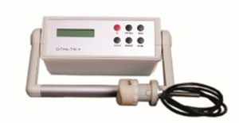
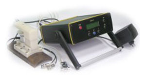

Products
-

Compressors and sensors
Oil and gas equipment and drilling tools, oil tubes in the field, mobile energy audit laboratories and environmental monitoring
-

Drilling plants
Installation with intelligent processing of measurement information based on artificial neural networks, designed for express control of combustion heat and qualitative characteristics of natural gas in domestic, industrial and field conditions
-

Reverse draft boilers
The device for finding a contactless and or contact way determine the location of cross-sectional damage in the insulating coating of metal pipelines without opening the soil
-
Crowler
The device for finding contactless and contact way of the location of cross-sectional damage in the insulating coating of metal pipelines without opening the soil
-
Specialized service equipment
(Holders, scanners, communication equipment) piezoelectric converters for ultrasonic control of oil tubes assortment and oil and gas equipment
-

IBC-І2
The device is designed to determine the impact strength of steels both in the conditions of enterprises and in field conditions
-
Polymer-4К
Installation for quality control of plastic pipes in the process of their manufacture (simultaneous control of wall thickness, diameter and eccentricity)
-
SIGMA-Т10.1
A device for determining the physical and mechanical characteristics of steel drill and pump tubes
-
ТК-1
The track finder is designed to find the location and depth of the metal pipelines and electrical cables enclosed under different types of road coverings, without opening the soil
-

MagniSCAN-2K
The MagniSCAN-2K complex is designed for computerized non-destructive control of the smooth part of the pump-compressor pipes directly in field conditions during major overhauls of wells or on production service bases
-
KTU-1
The ultrasonic corozymeter-thickness gauge is designed to determine the degree of corrosion damage to the surface with the simultaneous measurement of the residual thickness of the material of the product, both with a flat and a cylindrical surface